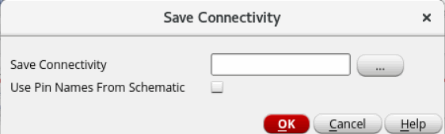

Extracting Connectivity Information from Package Layout
The Virtuoso RF Solution lets you extract connectivity information from package layouts. This information is saved to a text file, which can later be applied to other package schematics or layouts. A connectivity file stores connectivity information in the following format:
Net_Name<space>Instance_Name1/Pin_Name<space>Instance_Name2/Pin_Name
For example, REF i1/OUT i2/IN i3/IN i4/IN
To extract connectivity information from the current package layout:
-
Choose Module – Connectivity – Save Connectivity to display the Save Connectivity form.
 - Specify a name and the location to save the connectivity file in the Save Connectivity field. You can also click the browse button, select the required folder, and then specify a a file name.
- Select Use Pin Names From Schematic to use pin names from schematic instead of pin numbers in an instance.
- Click OK.
Connectivity information from the current package layout is saved to the specified text file. The following image shows a connectivity file.
You can manually edit or create a new connectivity files as per your requirements.
Related Topic
Creating and Saving Connectivity Information in Package Schematic
layoutConnectivityPinNamesChkBox
Return to top